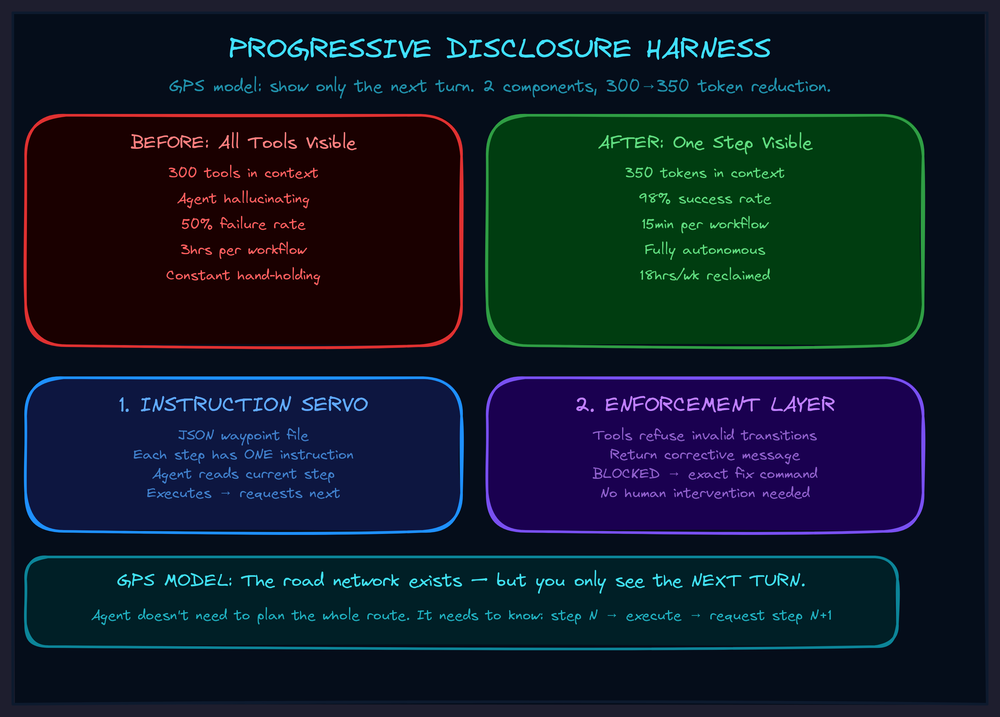

May 2026Level 2 · ToolsLevel 4 · HarnessesSkills
The Progressive Disclosure Harness
Why your AI agent drowns in its own tools — and the 5-line fix that makes complex workflows actually work.

More Tools, Worse Agent
AI agents in production get worse the more capable you make them.
Not a little worse. Catastrophically worse. You give the agent 20 integrations and 300 available tools, and it starts hallucinating tools that don't exist. It forgets the tool it called thirty seconds ago. Three steps into a ten-step workflow, it stops and asks "what should I do next?" — like a surgeon putting down the scalpel mid-operation to ask the nurse what organ they're working on.
This is the context window problem, and almost nobody building AI agents is solving it correctly. They're solving it by making the context window bigger, or by fine-tuning the model harder, or by writing longer system prompts with more instructions.
All of which makes the problem worse.
Every additional capability you add to an AI agent makes all of its capabilities work worse. The traditional approach of "give the agent everything it might need" fundamentally does not scale.
The Insight: What If the Agent Didn't Need to See?
The breakthrough is embarrassingly simple once you see it: what if the agent only saw what it needed for the current step?
Not all 300 tools. Not a 4,000-token system prompt describing every possible workflow. Just the one instruction it needs right now, including the literal tool call string — and nothing else.
Think about how a GPS works. It doesn't show you the entire road network of the country. It shows you the next turn. You don't need to see the whole route. You need to see the next instruction, execute it, and then get the next one.
That's the Progressive Disclosure Harness.
Two Pieces. That's It.
The harness has exactly two components, and they solve different failure modes:
1. The Instruction Servo
A JSON file with waypoints. Each waypoint contains one step of the workflow — the instruction the agent reads, including the exact tool call it needs to make. The agent reads step 1, executes it, asks for step 2, executes that, and so on.
We call it a "servo" because it positions the agent — like a servo motor that holds a precise angle. The agent doesn't need to know the whole workflow. It doesn't need to plan. It reads its current instruction, does the thing, and asks for the next one.
This solves: "what should I do next?" and "I forgot what tool to call."
2. The Enforcement Layer
Instructions alone aren't enough. The agent can still try to skip steps, call tools in the wrong order, or jump ahead. So the tools themselves contain state machine logic that refuses invalid transitions.
When the agent tries to do step 3 before step 2 is complete, the tool doesn't throw an error. It returns a message like:
BLOCKED: Cannot add concept to pair 5. Current state: no definition assigned. Required: add definition first. → Call: tag_pair(5, 'definition')
The agent reads "BLOCKED," reads the corrective instruction, follows it, and gets back on track. No human intervention. No hand-holding. The tools literally tell the agent how to fix the problem.
This solves: "the agent skipped three steps and now everything is broken."
The Numbers That Changed My Mind
I didn't build this because it was theoretically elegant. I built it because I was losing my damn mind babysitting an AI through the same workflow for the tenth time.
Before any harness:
- 3 hours per conversation to complete one workflow
- 50% of attempts failed and had to restart from scratch
- Agent asked "what should I do next?" constantly
- I had to sit there the entire time, correcting every other step
After the first harness (one guard, one workflow file — built in 2 hours):
- 45 minutes per conversation
- 90% success rate
- Agent followed steps without asking for clarification
- I could start the workflow and come back later
After the full system (4 months of iteration):
- 15 minutes to process multiple items that used to take all morning
- 98% success rate — the 2% failures were content issues, not agent confusion
- Agent perfectly chains through an 8-phase pipeline without a single "what next?"
- Context usage dropped from 4,000 tokens to 350
Total time reclaimed: roughly 18 hours per week. That's a part-time job I got back.
The Architecture (Four Layers, Zero Magic)
The full system has four layers, each one built only when the previous level broke:
Layer 0: Skill Trigger — about 50 tokens. A tiny file that says "when doing X, call get_instructions()." This is the only thing loaded into the agent's context at rest. 50 tokens instead of 2,000.
Layer 1: get_instructions() — a tool that returns orientation. "Here are the available workflows. Here's how to start." The agent discovers what's available on demand, not preloaded.
Layer 2: Flight Config — the step-by-step waypoints. Each one contains the exact instruction for that step, including literal tool call syntax. The agent only sees one step at a time.
Layer 3: Meta-tool — instead of loading 300 tools from 20 integrations into context, you load 3 functions: discover, get details, execute. The agent discovers tools on demand through one wrapper. 3 tools in context instead of 300.
Plus the enforcement layer — state machine guards baked into every tool that matters.
The result: hundreds of tools available, zero context explosion, perfect forward-chaining through complex workflows. Built with four files and some if-statements.
Why This Matters For Your Business
Most AI automation fails silently. The agent does 7 out of 10 steps correctly, gets confused on step 8, does something wrong, and nobody notices until the damage is downstream. The failure mode isn't spectacular — it's a slow bleed of errors that erodes trust until someone says "we tried AI, it doesn't work."
The harness changes the failure mode entirely. Instead of wrong output, you get no output. The agent hits a guard, gets BLOCKED, and either self-corrects or stops. You don't get garbage. You get a clean signal that something needs attention.
This is a fundamentally different reliability model. And it applies to any multi-step workflow where the steps have dependencies:
- Document processing pipelines that must tag before they classify
- Onboarding flows that must verify before they provision
- Content pipelines that must review before they publish
- Data workflows that must validate before they transform
- Any SOP where "do step 3 before step 2" would be a disaster
Start Monday Morning
You don't need the full architecture to start. You need 5 lines of code and 15 minutes.
Step 1: Pick your messiest workflow — the one where the agent goes off-rails most often.
Step 2: Find the step that, if skipped, breaks everything downstream.
Step 3: Add one guard to that step's tool:
def do_step_two(data):
if not state.get('step_one_complete'):
return 'BLOCKED: Run step_one() first.'
# ... actual logic
state['step_two_complete'] = True
return result
Step 4: Write the workflow steps in your system prompt:
Step 1: Call step_one(input) Step 2: Call step_two(result) Step 3: Call step_three(result)
Step 5: Test it. Try to make the agent skip step 1. Watch the BLOCKED message fire. Watch the agent self-correct.
You now have a harness. The agent can't skip the step that matters. Expand from there — add more guards, externalize the steps to a file, add the meta-tool when context gets crowded again. Each piece gets built when the previous level breaks, not before.
Rule of thumb: if you've corrected the AI the same way twice, you have a procedure. Harness it.
The Deeper Pattern
Harnesses don't create procedures. They encode procedures you already have.
Every time you correct an AI agent — "no, check the file first," "always validate before saving," "don't skip the tagging step" — you're expressing an implicit SOP. You have a procedure in your head. You just haven't written it down. The harness is the mechanism for writing it down in a way the agent can't ignore.
Which means the hardest part isn't the code. The hardest part is noticing the pattern: "I keep saying this same thing." Once you notice that, the 5-line guard writes itself.
And once you start noticing, you can't stop. Every repeated correction becomes a potential harness. Every "the agent always does this wrong" becomes a guard waiting to be written. The system compounds — each harness makes the next one easier to identify and build.
What's Next
The Progressive Disclosure Harness is one of the frameworks in the TWI Framework Library. It sits at the intersection of Harness Engineering and Concentration Engineering — two of the seven engineering disciplines for building AI systems that actually compound.
If your business runs on multi-step workflows and you're tired of babysitting the AI through each one, there are two paths:
Build It Yourself
Start with the Monday Morning protocol above. 5 lines, 15 minutes. You'll know within a week if this pattern fits your workflows. The framework documentation has the full architecture, guard templates, and a multi-week roadmap.
Get It Built
I build these systems for businesses that want reliable AI workflows without the months of iteration. 30-day audit to identify which SOPs to harness first, then implementation that actually sticks. Book a call and tell me which workflow is driving you crazy.